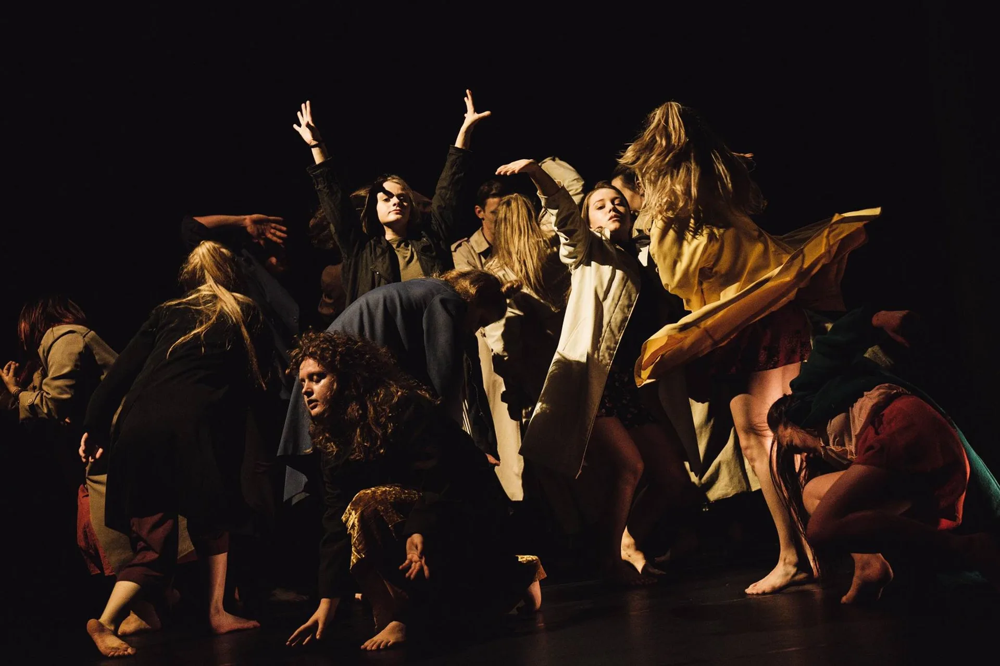
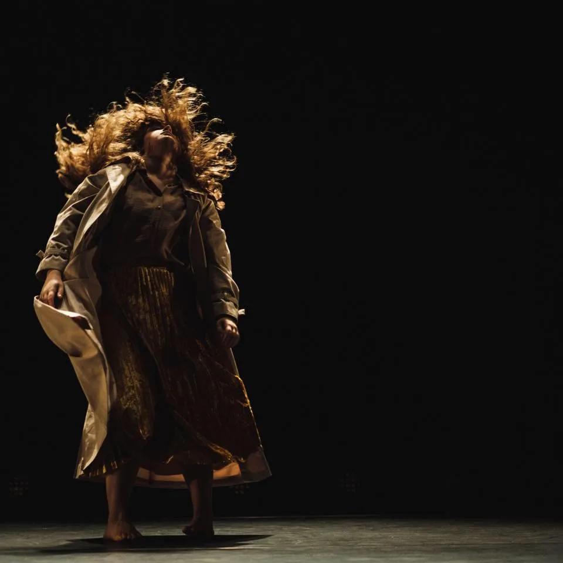
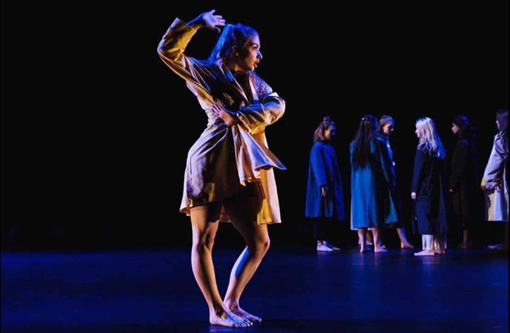

Collaborazione · Ensemble · educazione / performance
That Place Over There
Un luogo in cui tutti potrebbero trovare spazio — ma non tutti sentono di appartenere.
Il progetto
That Place Over There esplora il senso di appartenenza attraverso cultura, gesto, memoria e oggetti che ricordano casa. Sviluppato con gli studenti della University of Salford, il progetto ha usato la ricerca coreografica di Matrafisc per riunire diversi linguaggi di movimento personali in un unico lavoro d’ensemble.
La collaborazione ha posto processo creativo e performance sullo stesso continuum: gli studenti hanno sviluppato movimento a partire dalla propria identità imparando come il materiale individuale possa convergere in una struttura coreografica condivisa.
Richiedi informazioni su questo progettoContesto creativo
That Place Over There
Sviluppato con gli studenti della University of Salford nel 2018–19, il progetto unisce performance e formazione nello stesso processo creativo. I partecipanti hanno creato movimento da identità, cultura, memoria e oggetti legati alla casa, riunendo poi i linguaggi individuali in una struttura d’ensemble.
Fotografie di performance
That Place Over There


